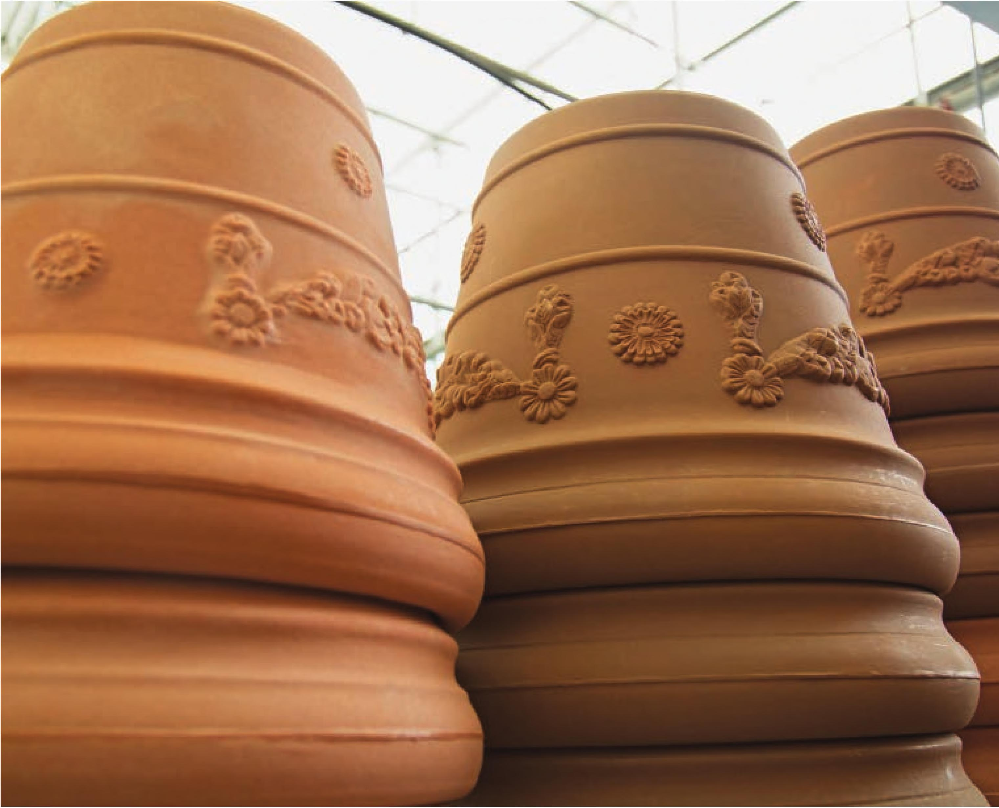

A 12" circular pot Square pots are great for using space efficiently. Low-cost grow bag Flexible fabric pot Circular plastic pots are generally the easiest to find. Square plastic pots can help maximize the space in a hydroponic garden by removing all gaps between pots. Square pots are a popular option in grow trays because they can be packed in tightly. Grow bags have been used in commercial farms for a long time and are starting to make their way into home gardens. They can be difficult to reuse, but they are definitely one of the cheapest options for a pot. The side walls of grow bags can be rolled down to adjust the volume of the pot. Although the bag may look square when empty, it fills out to be a cylinder. Fabric pots are great for hydroponics because they are quick draining but don't have large holes that can possibly let out substrate. They are perfect for flood and drain systems because it is easy for the water to soak into the substrate and then drain quickly. Fabric pots are easy to reuse too! Simply empty out the substrate, turn the bag inside out, let it dry, and brush off any remaining debris. They can even be put in a washing machine fora deep clean. Terracotta pots are not commonly seen in hydroponics, but that doesn't mean they can't be used. Terracotta pots used in gardens are porous, allowing air and water to pass through the walls, traits similar to a fabric pot. Unlike a fabric pot, terracotta is heavy and fragile. Classic terracotta pots EQUIPMENT 23
